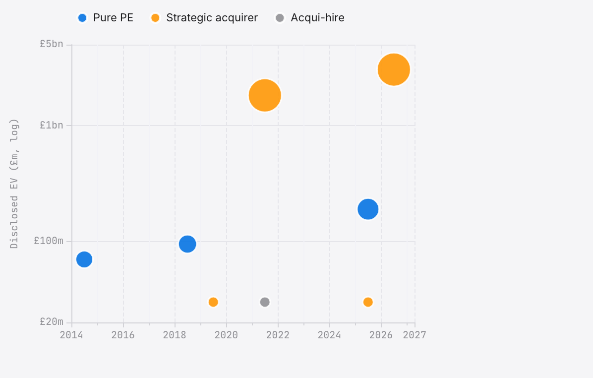

Part 5 of 7: an eighteen-partner competition-economics firm on a single floor of 199 Bishopsgate quietly booked the highest profit-per-partner of any UK professional-services firm that files its accounts in full; McKinsey swallowed Vivid; Jacobs bought PA Consulting for £3.05 billion; Goldman Sachs bankrolled a twenty-five-person walkout from Compass Lexecon. The next five years are already in the filings.
On 23 January 2026, RBB Economics lodged its FY25 accounts at Companies House, and buried in the notes was a single figure that said everything about the shape of the firm: the highest-paid designated member had taken £5.77 million. The number sat on £108.4 million of revenue and £61.0 million of operating profit; it came from a partnership of eighteen, drawing an average of £3.34 million a head. Which of the eighteen was the top earner, the accounts did not say — designated-member disclosure does not require a name. A single line item, no identity attached, and the most profitable seat in British consulting.
A trawl through every UK consulting LLP that files detailed accounts turned up nothing higher. Magic Circle law firms, global accountants, the big strategy houses — none of them disclosed a larger designated-member share than RBB for FY2025. A&M Europe LLP's top earner took more in cash terms, but A&M is a fifty-plus-member Europe-wide partnership sitting on €301 million of revenue. RBB's highest-paid member did it with seventeen colleagues, from a single floor at 199 Bishopsgate, on competition work.
The story of Part 5 is how RBB got there between 2020 and 2025. Revenue almost doubled; the partnership shrank; profit per member climbed from £2.02 million to £3.34 million. Twenty-three years after the 2002 walkout from NERA that Part 2 sets down in detail, the firm Ridyard, Bishop, and Baker built posted the highest profit-per-partner visible in the Companies House trove of UK professional-services LLPs that file in full. Several Magic Circle and elite American law firm partnerships almost certainly pay their top earners above £5.77 million — but they do not disclose member-level remuneration in a form that permits a clean comparison, so the comparison cannot be made.
This part is about the last five years. It is also about the next twenty-five.
Suppose there are two firms in the same industry, in the same country, at the same moment. Both double their revenue in five years. Both end the period celebrated by the trade press. Yet the end state of one partner in each firm could hardly be more different — and the difference lives in a single column of the accounts. RBB and Baringa are those two firms, and the column is headed Members.
| Year | Revenue | Op Profit | Margin | Members | £/member |
|---|---|---|---|---|---|
| FY2021 | £60.7m | £40.8m | 67.2% | 20 | £2.02m |
| FY2022 | £62.9m | £39.6m | 62.9% | 19 | £2.06m |
| FY2023 | £75.0m | £46.2m | 61.7% | 19 | £2.40m |
| FY2024 | £82.0m | £44.0m | 53.7% | 18 | £2.41m |
| FY2025 | £108.4m | £61.0m | 56.3% | 18 | £3.34m |
Start at the Members column. RBB carried twenty partners into FY2021 and carries eighteen now. While it was cutting its owners by two, it was growing revenue by 79 per cent; every extra pound of turnover landed on a smaller group of people. That is the arithmetic of the profit machine, and the margin profile tells the other half of the story. Through FY2024, operating margins drifted downward as the firm took on associates, opened new desks, and absorbed the cost of expansion; then in FY2025 the leverage kicked. Revenue jumped £26 million year on year, operating profit jumped £17 million, and the mid-level economists who had been hired two and three years earlier started billing at senior rates. The partners took the difference.
| Year | Revenue | Members | £/member |
|---|---|---|---|
| FY2021 | £202m | 98 | £0.90m |
| FY2025 | £450m | 178 | £0.91m |
Baringa did the opposite thing. Revenue more than doubled; the partnership nearly doubled alongside it; and profit per member barely budged. The firm chose scale and distribution over concentration, and while its top earner in FY2025 still walked away with £11.3 million, the median partner made roughly the same in 2025 as in 2021. RBB grew revenue 79 per cent with fewer partners. Baringa grew revenue 123 per cent with 82 per cent more partners. Both are successful businesses. Only one built a profit machine.
In March 2021, McKinsey announced that it had acquired Vivid Economics. The press release called it an acquisition. The Companies House file calls it something different.
Vivid had always filed under the small company exemption: no revenue line, no segmental profit, no partner remuneration. At the time of the deal it employed roughly 130 people across London and Washington, and the marquee names were all present. Cameron Hepburn, the Oxford climate economist and co-founder; Robert Ritz, a former chief economist at HM Treasury; John Ward, the long-serving managing director. McKinsey wanted the team, and it wanted Planetrics, the climate scenario software Vivid had built. What it did not want was the legal entity.
What followed was textbook acqui-hire mechanics. McKinsey took the 130 people into McKinsey Sustainability. Hepburn became a senior adviser while keeping his Oxford chair; Ritz joined as a partner; the Planetrics codebase transferred and the clients migrated. And Vivid Economics Limited — a company that had existed since 2006 — was left as an empty shell.
In August 2023 the shell entered Members Voluntary Liquidation. PwC took the appointment, Steven Sherry and Jen Whatcott signed the paperwork, and the final dissolution is scheduled for May 2026. By then there will be no trace of Vivid Economics on the Companies House register except the liquidation history and a final set of accounts that never disclosed what the firm had actually been worth.
The case is worth attending to because of how the trade press covered it at the time. Vivid was described as a failed experiment, a firm that burned out, a cautionary tale about scaling climate consulting. None of that is visible in the filings. The filings show an acqui-hire executed cleanly: McKinsey bought the people and the IP, wound down the corporate wrapper on its own schedule, and built a Sustainability practice that now dwarfs what Vivid could have become on its own. Hepburn still does the work. The clients still get the advice. The legal entity is just admin.
One deal is not a rule. But the Vivid case suggests a pattern, and the pattern is that when a Big 3 strategy house wants a climate economics bench, it buys a team rather than building one — and walks the company into liquidation on the way out. Cambridge Econometrics (with its E3ME model), eftec, Aurora Energy Research, E3G: all have the kind of specialist climate-economics capabilities that would fit the thesis, though whether any of them are acquisition targets is speculation rather than evidence.
Dallas sets the price. In the seven years between 2019 and 2026, a New York-listed engineering company called Jacobs Solutions — sixteen-billion dollars of annual revenue, defence programme management for the Pentagon, infrastructure advisory for Whitehall — quietly assembled one of the largest positions in UK advisory consulting. It did so in three transactions, spread across seven years, without appearing once in the trade press that covers this sector. The filings, however, are explicit.
The first transaction was small. In October 2019, Jacobs took a fifty-per-cent stake in Simetrica, a Hammersmith boutique founded five years earlier by Daniel Fujiwara to specialise in wellbeing valuation — the discipline of attaching a monetary number to social outcomes for Treasury business cases. The price was never disclosed. The firm was renamed Simetrica-Jacobs and kept trading from the Shepherds Building. The deal bought Jacobs a seat at the table where UK central government writes its Green Book appraisals; it bought it cheaply; and it signalled an ambition larger than the sector was then willing to credit.
The second transaction was large. On 30 November 2020 Jacobs announced a sixty-five per cent majority interest in PA Consulting Group Limited, a four-thousand-person advisory firm headquartered at 10 Bressenden Place, behind Victoria Station; the deal closed on 2 March 2021 at an enterprise value of £1.825 billion. Carlyle, which had held fifty-one per cent of PA since September 2015 at a purchase valuation of roughly a billion dollars, exited in a single step. PA employees took £248 million into an employee benefit trust, with twenty-five per cent of common equity reserved for a Management Equity Plan. Overnight, PA Consulting — defence, digital, healthcare, UK regulated utilities, public sector — became the strategic core of Jacobs's European consulting footprint.
But Jacobs had only bought sixty-five per cent. Thirty-five per cent remained with employees and former partners, collected dividends, and waited.
The third transaction closed on 23 March 2026. Upfront consideration: £1.216 billion — eighty per cent cash, twenty per cent Jacobs stock. Deferred consideration: £75 million, payable on the second anniversary at Jacobs' election of instrument. Implied enterprise value for the whole firm: £3.05 billion. Implied multiple: thirteen times expected calendar-2025 adjusted EBITDA, 12.3 times after anticipated synergies. From FY27 PA Consulting's UK accounts will consolidate into Jacobs's New York-listed 10-K, and the most visible brand in post-privatisation British advisory will file under a Delaware holding company's disclosure regime.
The arithmetic carries a story that is easy to miss. Enterprise value grew from £1.825 billion in March 2021 to £3.05 billion in March 2026 — a sixty-seven per cent uplift over five years, roughly ten-and-a-half per cent annualised, during a period in which the FTSE 350 Financial Services index returned about half that. The thirty-five per cent employee stake, worth approximately £639 million on the 2021 entry valuation, sold for £1.29 billion; employees captured six hundred and fifty million pounds of value creation over five years, after Carlyle had already taken its own gain and left. Of the three owners in PA's twenty-first-century history, the last one in paid the most per share of economic interest; the first one left with the cleanest exit; the employees, as is usually the case with employee stakes in professional-services firms, split the difference.
data/pe_deals.csv.
This is not private equity in the conventional sense. Jacobs is a public company operating a long-horizon roll-up: no exit clock, no limited partners to repay, no ten-per-cent management fee. What it shares with Cinven, Phoenix Equity Partners, LDC, and HgCapital is the thesis — that UK regulated-industry advisory work carries defensible margins and an ageing ownership base — and what differs is the vehicle. Jacobs does not return capital to investors. It absorbs companies into a global services business and keeps them.
Call this the strategic acquirer. The pattern has a name and a specific profile. The pure PE houses buy, leverage, grow, and sell within a five-year cycle. The strategic acquirers — Jacobs for the whole-firm route, McKinsey for the acqui-hire route — buy, integrate, and hold. McKinsey took Vivid's 130 people into McKinsey Sustainability and left the corporate shell to liquidate; Jacobs bought the corporate shell, the people, and the client contracts, and kept running them under the acquired brands. Same thesis, different mechanics.
Three numbers finish the picture. Jacobs now owns one hundred per cent of PA Consulting and one hundred per cent of Simetrica-Jacobs. Had Jacobs fully owned PA for all of fiscal 2025, its own pro-forma adjusted EBITDA margin would have been fourteen-and-a-half per cent — measurably above the margin Jacobs actually reported, and the disclosure is the reason the January 2026 deal announcement read the way it did. And UK professional-services consulting — a market for which the Financial Times does not maintain a dedicated correspondent — now carries a £3 billion transaction marker that every subsequent deal will be compared against. The template is set.
In February 2025, Jonathan Orszag walked out of Compass Lexecon with more than twenty-five economists behind him. Catherine Barron, a long-serving Compass Lexecon executive vice president, came with him as Managing Partner. Kirsten Edwards-Warren — formerly Director of Economics at the Office of Fair Trading and the Competition Commission, and then Co-Head of EMEA at Compass Lexecon — took the London anchor role. They called the new firm Econic Partners. The capital came from Goldman Sachs Alternatives, alongside the Willig and Ordover families.
The market marked the moment precisely. FTI’s fourth-quarter results, released the day after the Econic launch, guided 2025 operating profit down by around £28 million ($35 million) against a group total of roughly £400 million ($500 million), with the company attributing the hit to lost revenue and the retention bonuses needed to hold the remaining bench. The shares fell fourteen per cent in a single session, cutting FTI’s market capitalisation to $5.9 billion. By the first-quarter call three months later, chief executive Steve Gunby was telling analysts the number was “likely to be higher than that” and that close to ten per cent of the economics-division staff had already defected. Truist’s Tobey Sommer closed his note with a single sentence: “margins will be something we continue to monitor.”
Two quotes from Orszag, a year apart, frame why any of this is possible. In an email to Gunby that later surfaced in FTI’s own complaint and was reported by the Financial Times in January 2024, he wrote: “In the vast majority of our matters, clients hire the expert and not the firm. That is why when economic experts change firms the clients generally move with them.” On the launch of Econic a year later he put the same point for public consumption: “When clients hire an expert, they hire an individual not a brand. In the end, there is only one person on the witness stand, and it is about that individual’s analysis and credibility. The brand they are associated with is not that relevant, and that is different from banking or management consulting.” The first quote is the private threat. The second is the public thesis. Both describe the same structural fact about expert-witness economics — the one that makes a £400 million diversified listed advisory firm structurally fragile around an eight-hundred-person economics practice.
It is that last detail that stops you. Robert Willig and Janusz Ordover co-founded COMPASS Lexecon's predecessor, COMPASS, in 2003; COMPASS then merged with Lexecon in 2008 to create the firm that would dominate UK and US competition economics for the next seventeen years. Now the families of the men who built Compass Lexecon are funding the breakaway from Compass Lexecon. The founders' heirs are financing the insurgents.
The parallel to 2002 is almost exact. That year, as Part 2 narrates in full, Ridyard, Bishop, and Baker walked out of an incumbent that had grown too big, too slow, and too tied to its corporate parent; they built a partnership model in its place, took the best work, and within twenty years were more profitable per partner than NERA had ever been.
Run the same sentences through 2025. Orszag walks out of Compass Lexecon with more than twenty-five economists. Compass Lexecon has been the incumbent for seventeen years. The firm has grown large under a corporate parent, with economics as one practice among many. The insurgents are building a partnership model. They are taking the best work. And if the pattern holds, in twenty years Econic will be more profitable per partner than Compass Lexecon ever was.
Twenty-three years between breakaways; almost exactly one generation. The economists who left NERA in 2002 are now in their sixties. The economists who left Compass Lexecon in 2025 are in their forties and fifties. The economists who will leave Econic in 2048 are probably first-year associates at Compass Lexecon right now.
Econic's UK expansion has been, in the firm's own words to the legal press, aggressive. Hires from Compass Lexecon's Madrid, Brussels, and Berlin offices have followed the London anchor, and competing mandates on the same merger cases have already surfaced. The Brussels bar is watching. So is the CMA's panel roster. The next three years will be brutal for both sides.
The firms in this dataset run on materially different models, and their filed accounts reflect that. Here is the state of play going into 2026.
Brattle Group UK. Revenue of £39 million in FY2024, an operating loss of £0.9 million, and four outstanding charges on the Companies House register. Brattle's US parent covers the shortfall and the firm continues to hire, but the UK numbers have been flat to negative for three consecutive years.
Frontier Economics. Revenue of £97 million, operating profit of £1.4 million, three years running. Frontier is employee-owned, and the thin margin appears consistent with a model in which profit is distributed through salary and bonus rather than the residual operating line — though that reading is an interpretation of the accounts rather than a confirmed statement from the firm's leadership. The accounts do not show the kind of operating-margin expansion that RBB's do, but the ownership structures are not comparable: RBB distributes profit to eighteen LLP members, while Frontier distributes value to its entire staff as shareholders.
RBB Economics. The outlier. Already covered. £3.34 million per partner, highest in the dataset.
A&M Europe LLP. €301 million of revenue, a €14.2 million top earner — the single largest remuneration line in the entire database. Alvarez & Marsal's Europe partnership has become the dominant force in restructuring economics and damages work, and the top of house takes a share that dwarfs anything in pure-play competition.
Baringa Partners. £450 million of revenue, a top earner of roughly £11.3 million (a derived figure — seven per cent of the £161.9 million discretionary profit pool disclosed in note 12 of the filed accounts, rather than a disclosed absolute), 178 partners. The scale story of the decade: utilities privatisation, energy transition modelling, and financial services regulation drove the growth.
Flint Global. £31 million of revenue, a 30 per cent operating margin. In 2025, Cinven led a private equity buyout at an enterprise value of £190 million — the first pure-PE buyout in UK economics consulting, and a materially smaller number than the Jacobs-PA transactions of the same period. The mechanics are different (see Section 3); the thesis is the same.
Fideres Partners. A litigation economics specialist, growing fast off class action damages work in competition and financial services. Private, opaque, and increasingly visible in UK collective proceedings before the Competition Appeal Tribunal.
Public First was acquired by Stonehaven on 25 March 2025, as part of Peter Lyburn's rolling acquisition of UK public affairs and policy advisory firms. Public First's founders Rachel Wolf and James Frayne stay on; the Stonehaven group now owns one of the largest political and policy consulting stacks in Westminster.
Oxford Economics is managing a family succession that became unexpectedly urgent when John Walker, the founder, passed away in March 2026. In a leadership transition already announced on 4 December 2025, Innes McFee had taken over as Chief Executive, Walker's son Neil Walker had been appointed Deputy CEO and joined the Board, and long-serving chief executive Adrian Cooper had moved to Executive Chairman. The firm remains private, family-controlled, and the largest independent macroeconomic forecaster in the UK; the PSC filings consequent on Walker's death had not yet appeared on the Companies House register as of April 2026.
Ninety UK economics consultancies sit in the canonical database (95 were initially identified; five were removed as dormant, duplicate, or out-of-scope), and their combined disclosed revenue crosses £2 billion — directionally consistent with Cebr's March 2018 estimate of £1.53 billion for 2016/17 with 11.3 per cent average annual growth, extrapolated to 2025. Roughly seventy of them file under the small company exemption and never show a turnover line, so the true total is higher and, strictly, unknowable. The ownership structure breaks down like this.
The long tail is the part nobody sees. Seventy-plus firms file small company accounts; they carry three to fifteen staff, generate an estimated £500,000 to £5 million of revenue, and serve particular regulatory or policy niches. They are the plankton of the ecosystem. A handful will grow into the next RBB. Most will stay exactly the size they are, and their founders will retire without ever having disclosed a turnover figure.
Six things will shape this industry between now and 2050. The first is already happening.
This is the industry that built itself between 2000 and 2025. It started with NERA dominant and Frontier Economics barely a year old. It ends with RBB Economics quietly posting the highest profit-per-partner of any British professional-services LLP that files in full; with a Goldman-backed spinout already ranked Elite in its first year of existence; and with a £2 billion-plus combined market that most people outside the sector would struggle to name three firms from.
Twenty-five years from now, somebody will write the 2025-2050 version of this series. They will pull the same Companies House filings, the same LLP disclosures, the same PSC ownership records. The story will be different. The raw material will be the same: audited accounts filed at Cardiff, year after year, by firms that most people have never heard of, making more money per partner than almost any other profession.
Every year, thousands of bright economics graduates apply to these firms, and most do not know what they are signing up for. Some will spend twenty years at NERA or Oxera, rise to senior management, and leave to found the next RBB; a few of them will end up on the highest-paid member line at some future LLP. The cycle started in 2002 with Ridyard, Bishop, and Baker. It continues now with Orszag and Barron at Econic. It will continue long after all of them.
Five senior economists left the CMA for private consultancies between 2022 and 2025. Keystone built, and then lost, its European leadership team. AlixPartners — backed by $2.5 billion of institutional capital — hired three senior competition economists in fourteen months. The revolving door turned out to be wider than the CMA alone: it runs through Ofgem, Ofcom, DG Competition, and the Treasury.
Read Part 6 →